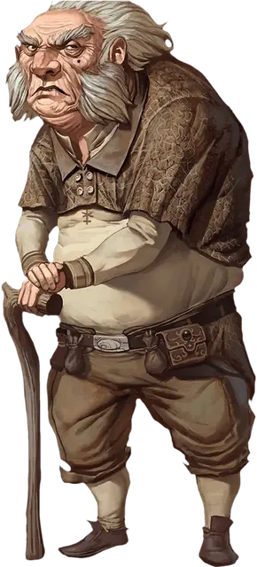

Вигган Неттлби
Wiggan Nettlebee
Маленький Гуманоид (Полурослик), нейтрально-злой, именной НИП

Класс Доспеха 11 (16 с дубовой корой)
Хиты 36 (8к6 + 8)
Скорость 30 футов
| мод | спас | ||
|---|---|---|---|
| СИЛ | 8 | −1 | −1 |
| ЛОВ | 12 | +1 | +1 |
| ТЕЛ | 12 | +1 | +1 |
| мод | спас | ||
|---|---|---|---|
| ИНТ | 14 | +2 | +2 |
| МДР | 15 | +2 | +2 |
| ХАР | 13 | +1 | +1 |
Навыки Обман +3, Проницательность +4
Языки Общий, Полуросликов
Опасность 2 (450 опыта)
Бонус мастерства +2
Особенности
Непоколебимая преданность. Вигган совершает спасброски против испуга и очарования с преимуществом.
Использование заклинаний. Вигган является заклинателем 4-го уровня. Его базовой характеристикой является Мудрость (Сл спасброска от заклинаний 12, +4 к атакам заклинаниями). У него подготовлены следующие заклинания жреца:
• Заговоры (неограниченно): указание [guidance], свет [light], починка [mending], дубинка [shillelagh], чудотворство [thaumaturgy]
• 1 уровень (4 ячейки):дружба с животными[animal friendship], лечение ран [cure wounds], лечащее слово [healing word], нанесение ран [inflict wounds], разговор с животными [speak with animals]
• 2 уровень (3 ячейки): дубовая кора[barkskin], шипы [spike growth], божественное оружие [spiritual weapon]
Действия
Мультиатака. Вигган совершает две атаки своей деревянной клюкой.
Деревянная клюка (дубинка). Рукопашная атака оружием: +0 к попаданию (+4 если наложен заговор дубинка [shillelagh]), досягаемость 5 фт., одна цель. Попадание: дробящий урон 1 (1к4-1) или дробящий урон 6 (1к8 + 2) если наложен заговор дубинка [shillelagh].
Описание
Вигган Неттлби возглавляет богатую семью полуросликов, занимающихся на своей земле разведением скота и фермерством. На первый взгляд он выглядит как скромный хозяин заурядного ранчо и ярый противник излишнего расточительства на своей ферме. Решив, что он нашёл культ, посвященный безоговорочному господству природы и использованию более тёмных её аспектов, Вигган присоединился к культу Чёрной Земли, хотя и не знает всех его планов. Вигган не любит чужаков и не доверяет им. Он считает их всех до одного злодеями, которые непременно попытаются обокрасть его при первой же возможности. Он видит в культе земли необходимого и могучего союзника, чья помощь в охране его благосостояния и поддержке общественного положения будет неоценимой. Жадный до крайности, Вигган заметно расстраивается при одной мысли о том, чтобы расстаться с не сколькими лишними монетами из своего сундука.